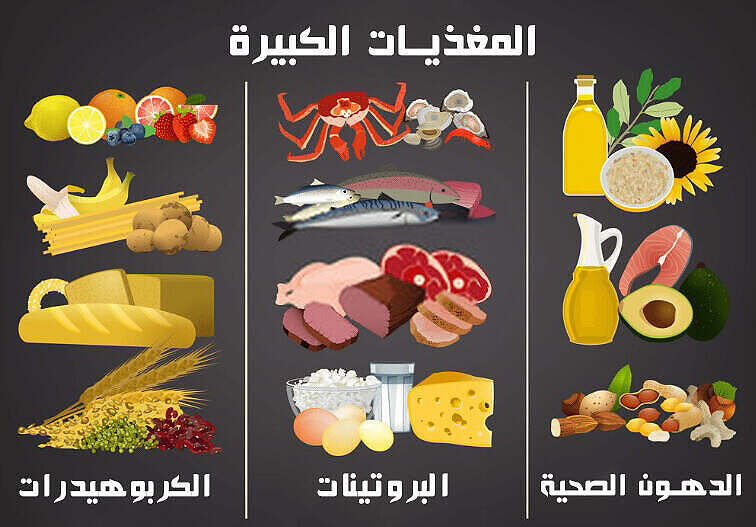
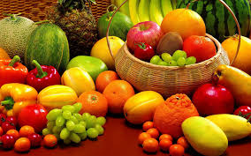
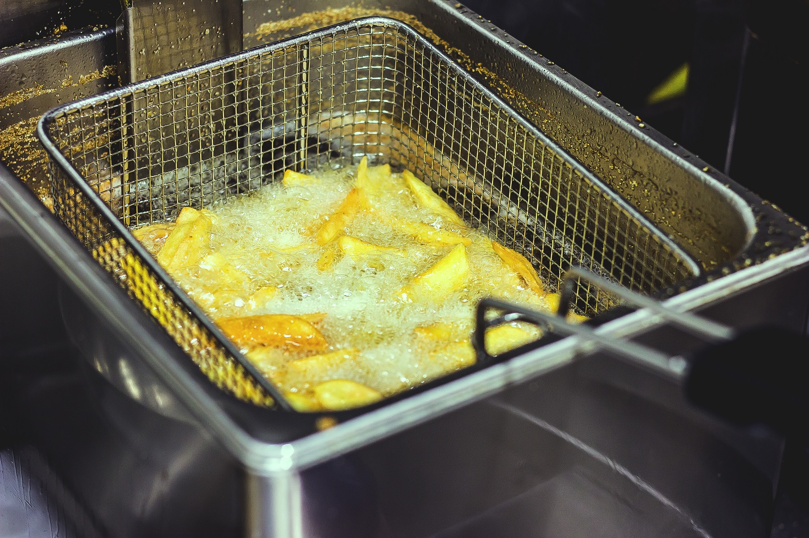
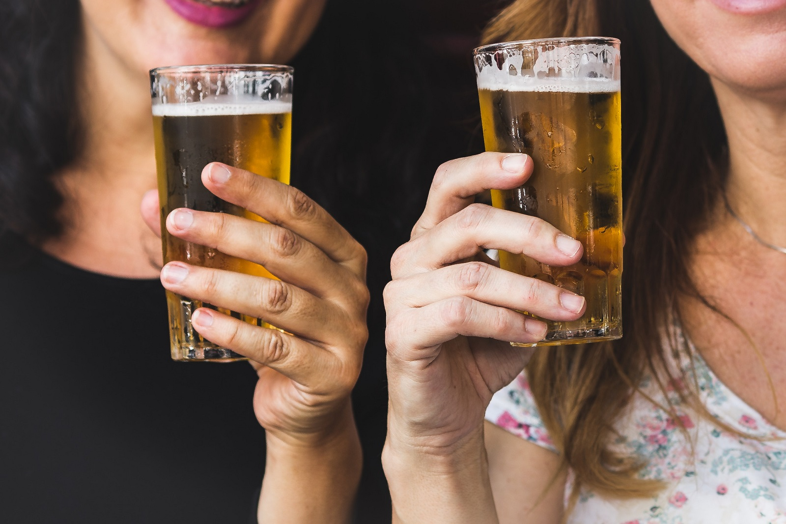

نصائح غذائية صحية
-
اشرب الماء: حافظ على ترطيب جسمك بشرب 8 أكواب ماء يوميًا.
-
تناول وجبات متوازنة: اجعل وجباتك تحتوي على البروتين، الدهون الصحية، والكربوهيدرات المعقدة.
 -
قلل من السكر: استبدل المشروبات السكرية بالفواكه الطبيعية للحصول على طاقة نظيفة.
 -
تقليل استعمال أنواع معيّنة من الدهون والزيوت:نحتاج جميعاً إلى بعض الدهون في نظامنا الغذائي، لكنّ الإفراط في تناولها – خاصةً الأنواع الخاطئة منها – يزيد مخاطر الإصابة بالبدانة وأمراض القلب والسكتة الدماغية.
 -
تجنُّب تعاطي المواد الكحولية الخطرة والضارة:لا يشكّل الكحول جزءاً من أي نظام غذائي صحي، وإن كانت احتفالات العام الجديد ترتبط في العديد من الثقافات باستهلاك الكثير من الكحوليات. وبصفة عامة، فإن الإفراط في شرب الخمر، أو تناولها بوتيرة عالية، يزيد من مخاطر تعرّضك لإصابات فورية، فضلاً عما يسبِّبه من آثار أطول أمداً مثل تلف الكبد والسرطان وأمراض القلب والأمراض العقلية.
